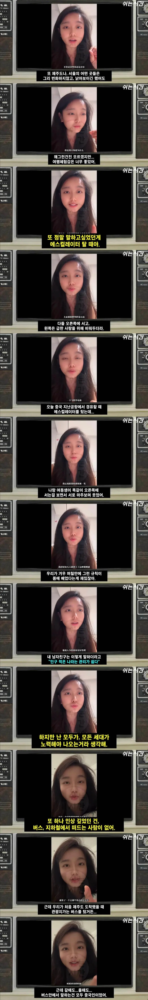
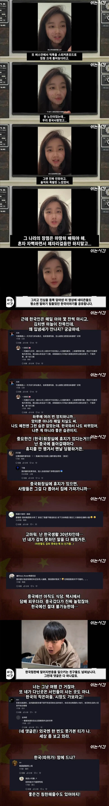
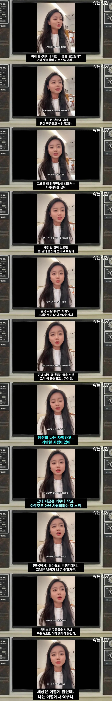

풍월을 읊는거 보니 중국인 맞음
ㄹㅇㅋㅋㅋ
두보의 나라
ㅋㅋㅋㅋㅋㅋㅋㅋㅋ이거 뭔가 척수반사같아서 웃기고 좋음 ㅋㅋㅋㅋ
신비해지는거 아님? ㄷㄷ
부모님이 말씀하신 해외여행으로 견문을 넓히라고 하신게 저런거겠지
과연 대륙의 기상이 완전히 사라진건 아니구만
오만하긴해도 스스로 천자라 칭할만큼의 도량도 보여줬었는데 말이지
치매 걸린 무림 고수 보는 기분
명나라때는 ㅅㅂ 조공국 구한다고 (지들 위험하기도 했지만) 나라가 휘청이게 도와줄줄도 아는 ㄹㅇ 형님 이었는데 청나라 오량캐 이후로 따거는 다 돌아가시고 소인배들만 살아남아서는..
한 때는 따거 형님들로 넘쳐나던 곳이였는데 문화대혁명에 싹 쓸려가버려서
따지에
밖에서 소리 존나 크게 해놓고 영상보는 사람 보면 상당수 그쪽임
여기도 중국 칭찬하면 난리 날텐데 ㅋㅋ
앗 ㅋㅋㅋ
중국 찬양글 개드립 엄청올라오는뎅 왱?
유튜부 구독목록이 보인다보여~
칭찬할게 있어야..
칭찬할게 있음?
할게있나? 좀 말해줘봐
해외나가서 인종차별 당하면 옆에서 존나 싸워주지너. 한진해~
따거!!
그리고 만두 존나 잘만듬. 우리동네 차이나티운이라 맨날 중국만두 막고 중국만두 차원이달라병 걸림
그래도 중국인들 일회용 치실 많이 쓰긴 하더라 먹던 자리에 그대로 버리고 감 ㅋㅋ
딴건 모르겠는데 폰으로 영상보면서 소리 크게 해놓고 보는건 진짜 싫더라
심지어 중국도 아니고 일본에서 교토가는 하루카 안에서 옆이랑 뒤에 앉은 중국인들 폰으로 영상보는데 소리 존내 크게 해놓고 보더라고
중국사람들이 확실히 표현력이 좋고 직설적임
난 중국식 표현이 좋더라
너의 안면은 우리 집 앞마당에 키우는 금붕어와 같지만
금붕어도 활기차게 살아가기 때문에 그것만으로도 배울점이 있다고 생각한다.
모사정어 약동가학 (貌似庭魚 躍動可學)
貌 (모양 모) 似 (같을 사) 庭 (뜰 정) 魚 (물고기 어) 외모는 앞마당에 키우는 물고기와 닮았으나
躍 (뛸 약) 動 (움직일 동) 可 (가할 가) 學 (배울 학) 펄떡이며 살아가는 모습은 가히 배울 만하다.
난 오히려 한결같은 중국인들에게 감사한다.
저들이 공공질서를 지키고, 사회의 암묵적인 배려를 이해하고
온전한 사상과 제대로 된 이성을 바탕으로 행동한다면?
생각만해도 너무 무섭다. 그냥 지금처럼 한결같이 발전없이
그대로 있길 바람.
한국 왔다가 시인이 됐네
휴지는 우리도 훔쳐가는 새끼들 때문에 잠구는데 있을텐데
회사 화장실에서 훔쳐가는놈 많이 봄 ㅋㅋ 중견기업이였는데
전 세계적으로 어그로 끌어줘서 이상한 짓=중국인 인식 있어서 여행 다닐 때 편함
첫짤 워터마크보고 무슨 수염인줄알았음
다구리 맞지 말고 그냥 한국으로 귀화해라 ㅋㅋ
이쁘당
마지막 멘트 보니까 중국인 맞네